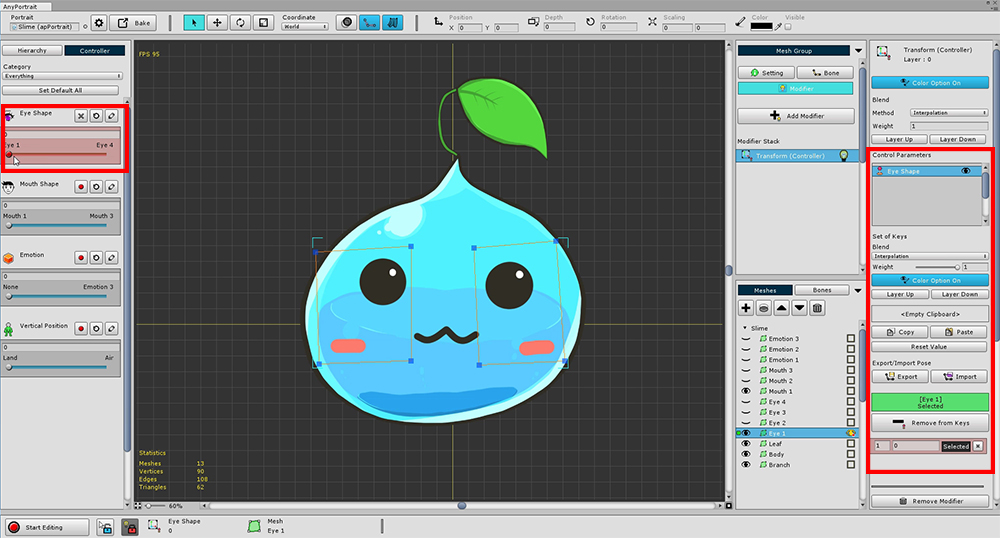
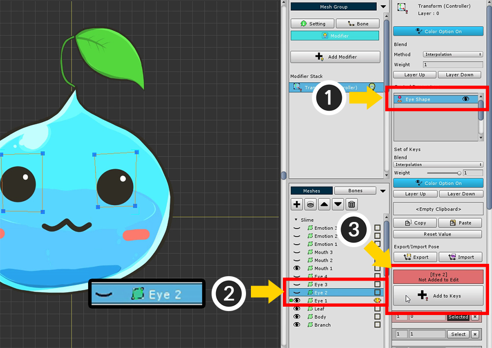
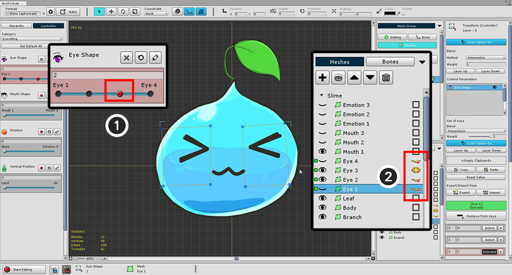
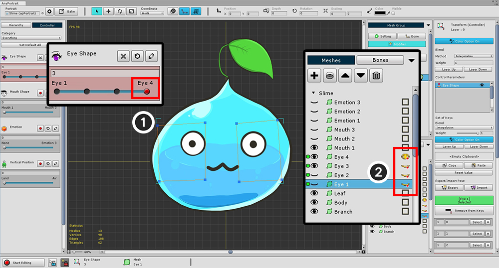

AnyPortrait > 入門ガイド > 1.6. 「Transform Modifier」で顔を変更
1.6. 「Transform Modifier」で顔を変更
1.1.6
AnyPortraitの最も重要なプロセスは、メッシュグループの「モディファイア(Modifier)」を追加することです。
モディファイアの動作原理は複雑なので、追加および使用方法についてのみ説明します。
モディファイアの種類、特性、注意については、関連ページを確認してください。
このページでは、「Transform（Controller）」モディファイアがさまざまなモディファイアの間で使用されています。
「Transform」モディファイアを使用すると、位置やサイズなどを変更したり、コントロールパラメータに合わせて色や視認性を変更することができます。
したがって、画像を置き換えることで表情を変えるのが適している。
最も基本的な修飾子として使用するのは簡単です。
(「Morph」モディファイアで色をコントロールすることもできます)。

前のページで作成した (1) 「Slime」メッシュグループを選択します。
(2) 「Modifier」メニューを選択します。 まだモディファイアが登録されていないことを確認できます。
(3) 「Add Modifier」ボタンを押して、モディファイアを追加するダイアログを開きます。
さまざまなモディファイアの中から (4) 「Transform（Controller）」モディファイアを選択します。
(5) 「Select」ボタンを押します。
AnyPortrait v1.3.3に追加された「Color Only（Controller）」モディファイヤを利用することもお勧めします。
詳細については、関連ページで確認することができます。

これは、モディファイアを追加した後に表示される画面です。
（モディファイアによって多少異なります。）
1. Modifier Stack : モディファイアは順番に計算されます。 （以下のモディファイアが最初に数えられます。）
2. モディファイアのオン/オフ : 操作中にモディファイアを一時的に無効にすることができます。 電球のアイコンをクリックしてオン/オフを切り替えます。
3. 選択された修飾子 : 現在選択されているモディファイアの名前、アイコン、およびレイヤーの位置。
4. Color Option On / Off : 「Transform / Morph」モディファイアで色の値を制御できます。 このボタンは、カラー値を制御するかどうかを決定します。
5. Blend : モディファイアと他のモディファイアとのブレンド方法を指定します。
- Method : 値をマージする方法。 「Interpolation」と「Additive」が利用可能です。
- Weight : 値をマージするときの重み。 値は0〜1です。
- Layer Up / Down : モディファイアの計算順序を変更します。
6. Control Parameters : 登録された制御パラメータを入力値として表示します。
7. Remove Modifier : 選択した修飾子を削除します。
モディファイアは、「入力キー」と「変更値」の組み合わせで構成されます。
このとき、現在のサンプルの「入力キー」に対応するのが制御パラメータであり、「変更値」はメッシュが色付けされているかレンダリングされているかである。
したがって、次のタスクは、「制御パラメータを入力値として」および「変更を適用するメッシュ」を選択して一緒に登録することです。
詳細は「関連ページ」をご覧ください。

(1) 「Controller」タブを選択します。
(2) メッシュ(Eye1)を選択します。
「Controller」タブが選択された状態で、以前作成した 「Eye Shape」パラメータをチェックします。
制御パラメータを入力値として受け取る修飾子を選択しているときに、「赤い記録ボタン」が表示されていることがわかります。
(3) 「Eye Shape」パラメータの「録音ボタン」を押して、モディファイアに登録します。
これにより、次のように画面が切り替わります。

制御パラメータの背景が赤に変わり、新しい設定が右側のUIに表示されます。
この状態は、「制御パラメータ+メッシュ」がモディファイアに登録されていることです。
他の「目の形のメッシュ」をモディファイアに登録しましょう。

(1) 「Eye Shape」制御パラメータが既に登録されているので、
(2) 他の目のメッシュ（Eye2）を選択する。
(3) 「Add to Keys」ボタンをクリックして登録してください。
同様に、4つすべての目のメッシュ（Eye1、Eye2、Eye3、Eye4）を登録します。

4つのメッシュすべてを登録した場合は、上記のように緑色のアイコンが表示されます。
次の作業は、実際に制御パラメータの各値に式を割り当てることです。
目の形状パラメータの値が0の場合、Eye1メッシュのみが表示され、
値が1の場合、Eye2メッシュだけが表示されます。

(1) パラメータ値を1に移動します。「赤い記録ボタン」は、その位置にキーがないためにアクティブです。
「Parameter value = 1」のとき、(2) レコードボタンを押してキーを生成します。
同様に、(3) パラメータを2に移動し、(4) 記録ボタンを押してキーを生成する。
(5)、(6)となり、計4個の鍵が生成される。

あなたが現在使用しているAnyPortraitバージョンがv1.1.6またはそれ以降のバージョンであれば、この段階で、Color Optionを有効にする必要があります。
メッシュの色、透明度、出力するかどうかを制御するためには、モディファイアのColor Optionがオンの状態である必要がするが、v1.1.6から最適化のためには、このオプションのデフォルト値がOFFに変更されました。

(1) モディファイヤの「Color Option」を入れます。
(2) 登録された制御パラメータの「Color Option」がオフになっている場合ボタンを押してオンにします。
(3) ここで、メッシュのレンダリングを変更することができる「黄色の目ボタン」が表示されます。
Color Optionについては、「関連ページ」をご覧ください。

目のメッシュの視認性は、制御パラメータの4つのキーによって決定されます。
まず、(1) 制御パラメータを最初の位置に戻す。 （キー値= 0）
(2) Eye1メッシュの黄色の目のボタンをオンにし、残りをオフにします。

次に、2番目のキーを操作します。
(1) 制御パラメータを第2の位置（キー値= 1）に移動させた後、
(2) Eye2メッシュの黄色の目のボタンをオンにして、残りをオフにします。


残りの2つのキーを同じ方法で操作して、4つの表情の設定を完了します。

上記と同じ方法で「Mouth Shape」を操作することもできます。
目と口の両方の表現を作成した場合は、ゲームからテストすることができます。
Unity Editorで Bake機能を実行してシーンに移動し、テストすることができます。